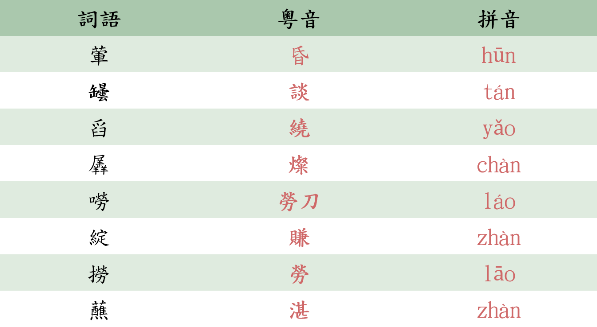
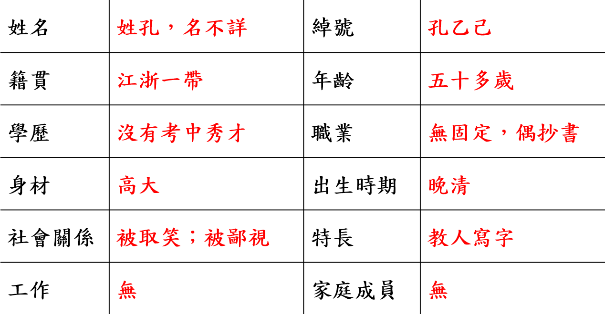
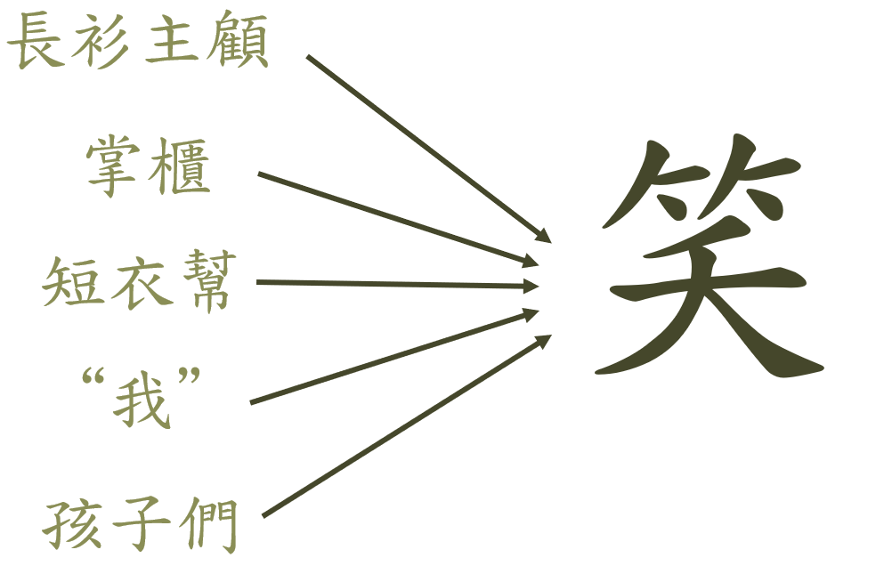
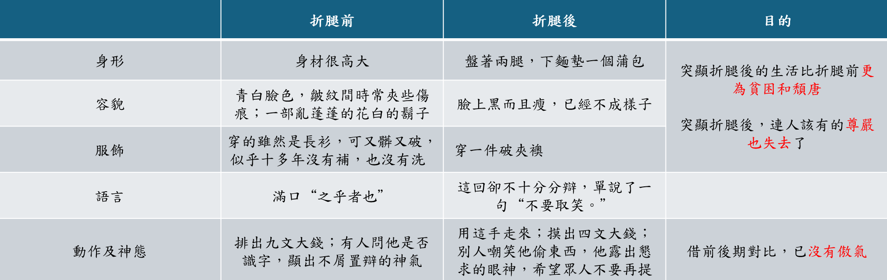

《孔乙己》
1 第一部份
開篇寫背景，酒店格局及帶出主角。
1.1 第一段
魯鎭的酒店的格局，是和別處不同的：都是當街一個曲尺形的大櫃臺，櫃裏面豫備着熱水，可以隨時温酒。做工的人，傍午傍晚散了工，每每花四文銅錢，買一碗酒——這是二十多年前的事，現在每碗要漲到十文，——靠櫃外站着，熱熱的喝了休息；倘肯多花一文，便可以買一碟鹽煑筍，或者茴香豆，做下酒物了，如果出到了十幾文，那就能買一樣葷菜，但這些顧客，多是短衣幫，大抵沒有這樣闊綽。只有穿長衫的，纔踱進店面隔壁的房子裏，要酒要菜，慢慢地坐喝。
寫酒店的格局，為人提供了活動場所。
1.2 第二段
我從十二歲起，便在鎭口的咸亨酒店裏當夥計，掌櫃說，樣子太儍，怕侍候不了長衫主顧，就在外面做點事罷。外面的短衣主顧，雖然容易說話，但嘮嘮叨叨纏夾不淸的也很不少。他們往往要親眼看着黃酒從罎子裏舀出，看過壺子底裏有水沒有，又親看將壺子放在熱水裏，然後放心：在這嚴重監督之下，羼水也很爲難。所以過了幾天，掌櫃又說我幹不了這事。幸虧薦頭的情面大，辭退不得，便改爲專管温酒的一種無聊職務了。
寫小夥計的經歷，起一石三鳥之用: 1.反映掌櫃投機取巧，短衣客斤斤計較； 2.小夥計的童工身份； 3.當時的人事關係。 更重要是找到一個觀察視角----用小夥計的眼睛看店裡發生的事。
1.3 第三段
我從此便整天的站在櫃臺裏，專管我的職務。雖然沒有什麽失職，但總覺有些單調，有些無聊。掌櫃是一副凶臉孔，主顧也沒有好聲氣，教人活潑不得；只有孔乙己到店，纔可以笑幾聲，所以至今還記得。
主角----孔乙己出埸
2 第二部份
寫孔乙己在酒店發生的事情
1.4 第四段
孔乙己是站着喝酒而穿長衫的唯一的人。他身材很高大；靑白臉色，皺紋間時常夾些傷痕；一部亂蓬蓬的花白的鬍子。穿的雖然是長衫，可是又髒又破，似乎十多年沒有補，也沒有洗。他對人說話，總是滿口之乎者也，教人半懂不懂的。因爲他姓孔，別人便從描紅紙上的『上大人孔乙己』這半懂不懂的話裏，替他取下一個綽號，叫作孔乙己。孔乙己一到店，所有喝酒的人便都看着他笑，有的叫道：『孔乙己，你臉上又添上新傷疤了！』他不回答，對櫃裏說：『温兩碗酒，要一碟茴香豆。』便排出九文大錢。他們又故意的高聲嚷道：『你一定又偸了人家的東西了！』孔乙己睜大眼睛說：『你怎麽這樣憑空汚人淸白……』『什麽淸白？我前天親眼見你偸了何家的書，弔着打。』孔乙己便漲紅了臉，額上的靑筋條條綻出，爭辯道：『竊書不能算偸……竊書！……讀書人的事，能算偸麽？』接連便是難懂的話，什麽『君子固窮』，什麽『者乎』之類，引得衆人都哄笑起來；店內外充滿了快活的空氣。
刻劃孔乙己的基本形象: 孔乙己那件脫不下的長衫 —— 遮羞布 孔乙己迂腐、官自讀書高、愛面子
1.5 第五段
聽人家背地裏談論，孔乙己原來也讀過書，但終于沒有進學，又不會營生；于是愈過愈窮，弄到將要討飯了。幸而寫得一筆好字，便替人家鈔鈔書，換一碗飯喫。可惜他又有一樣壞脾氣，便是好喝嬾做。坐不到幾天，便連人和書籍紙張筆硯，一齊失蹤。如是幾次，叫他鈔書的人也沒有了。孔乙己沒有法，便免不了偶然做些偸竊的事。但他在我們店裏，品行卻比別人都好，就是從不拖欠；雖然間或沒有現錢，暫時記在粉板上，但不出一月，定然還淸，從粉板上拭去了孔乙己的名字。
插敘主人公的身世經歷與人品介紹
1.6 第六段
孔乙己喝過半碗酒，漲紅的臉色漸漸復了原，旁人便又問道，『孔乙己，你當眞認識字麽？』孔乙己看着問他的人，顯出不屑置辯的神氣。他們便接着說道：『你怎的連半個秀才也撈不到呢？』孔乙己立刻顯出頹唐不安模樣，臉上籠上了一層灰色，嘴裏說些話；這回可是全是之乎者也之類，一些不懂了。在這時候，衆人也都哄笑起來：店內外充滿了快活的空氣。
寫眾人對孔乙己的奚落，嘲諷以及孔乙己的反應。
1.7 第七段
在這些時候，我可以附和着笑，掌櫃是決不責備的。而且掌櫃見了孔乙己，也每每這樣問他，引人發笑。孔乙己自己知道不能和他們談天，便只好向孩子說話。有一回對我說道，『你讀過書麽？』我略略點一點頭。他說，『讀過書，……我便考你一考。茴香豆的茴字，怎樣寫的？』我想，討飯一樣的人，也配考我麽？便回過臉去，不再理會。孔乙己等了許久，很懇切的說道：『不能寫罷？……我教給你，記着！這些字應該記着。將來做掌櫃的時候，寫帳要用。』我暗想我和掌櫃的等級還很遠呢，而且我們掌櫃也從不將茴香豆上帳；又好笑，又不耐煩，嬾嬾的答他道：『誰要你教，不是草頭底下一個來回的回字麽？』孔乙己顯出極高興的樣子，將兩個指頭的長指甲敲着櫃臺，點頭說：『對呀對呀！……回字有四樣寫法，你知道麽？』我愈不耐煩了，努着嘴走遠。孔乙己剛用指甲蘸了酒，想在櫃上寫字，見我毫不熱心，便又歎一口氣，顯出極惋惜的樣子。
孔乙己教小夥計寫字。
1.8 第八段
有幾回，鄰舍孩子聽得笑聲，也趕熱鬧，圍住了孔乙己。他便給他們茴香豆喫，一人一顆。孩子喫完豆，仍然不散，眼睛都望着碟子。孔乙己着了慌，伸開五指將碟子罩住，彎腰下去說道：『不多了，我已經不多了。』直起身又看一看豆，自己搖頭說：『不多不多！多乎哉？不多也。』于是這一羣孩子都在笑聲裏走散了。
寫孔乙己給孩子們茴香豆，帶出他的複雜性格。
3 第三部份
孔乙己被打折了腿，最後一次在酒店出現
1.9 第九段
孔乙己是這樣的使人快活，可是沒有他，別人也便這麽過。
指出他的非必要性
1.10 第十段
有一天，大約是中秋前的兩三天，掌櫃正在慢慢的結帳，取下粉板，忽然說：『孔乙己長久沒有來了。還欠十九個錢呢！』我纔也覺得他的確長久沒有來了。一個喝酒的人說道，『他怎麽會來？……他打折了腿了。』掌櫃說：『哦！』『他總仍舊是偸。這一回，是自己發昏，竟偸到丁舉人家裏去了。他家的東西，偸得的麽？』『後來怎麽樣？』『怎麽樣？先寫服辯，後來是打，打了大半夜，再打折了腿。』『後來呢？』『後來打折了腿了。』『打折了怎樣呢？』『怎樣？……誰曉得？許是死了。』掌櫃也不再問，仍然慢慢的算他的帳。
借老闆提及孔乙己的事情，反映當時冷漠的社會關係
1.11 第十一段
中秋過後，秋風是一天涼比一天，看看將近初冬；我整天的靠着火，也須穿上棉襖了。一天的下半天，沒有一個顧客，我正合了眼坐着。忽然間聽得一個聲音，『温一碗酒。』這聲音雖然極低，卻很耳熟。看時又全沒有人。站起來向外一望，那孔乙己便在櫃臺下對了門檻坐着。他臉上黑而且瘦，已經不成樣子；穿一件破夾襖，盤着兩腿，下面墊一個蒲包，用草繩在肩上掛住；見了我，又說道，『温一碗酒。』掌櫃也伸出頭去，一面說：『孔乙己麽？你還欠十九個錢呢！』孔乙己很頹唐的仰面答道，『這……下回還淸罷。這一回是現錢，酒要好。』掌櫃仍然同平常一樣，笑着對他說，『孔乙己，你又偸了東西了！』但他這回卻不十分分辯，單說了一句『不要取笑！』『取笑？要是不偸，怎麽會打斷腿？』孔乙己低聲說道：『跌斷，跌，跌……』他的眼色，很像懇求掌櫃，不要再提。此時已經聚集了幾個人，便和掌櫃都笑了。我温了酒，端出去，放在門檻上。他從破衣袋裏摸出四文大錢，放在我手裏，見他滿手是泥，原來他便用這手走來的。不一會，他喝完酒，便又在旁人的說笑聲中，坐着用這手慢慢走去了。
孔乙己的各種轉變: 由正常變殘缺 由文而白 由爭辯到低聲下氣
4 第四部份
孔乙己的下場
1.12 第十二段
自此以後，又長久沒有看見孔乙己。到了年關，掌櫃取下粉板說：『孔乙己還欠十九個錢呢！』到第二年的端午，又說：『孔乙己還欠十九個錢呢！』到中秋可是沒有說，再到年關也沒有看見他。
1.13 第十三段
我到現在終于沒有見——大約孔乙己的確死了。
1.5 本文的情節結構劃分
第一部份（1－ 3） 介紹鹹亨酒店，交代環境
第二部份（4—13）介紹主人公的遭遇。
（4－9） 交代孔乙己的經歷和性格 （開端、發展）
（10－11）孔乙己最後一次到酒店喝酒 （高潮）
（12－13）孔乙己的悲慘結局 （結局）
2 文化常識
2.1 作者部分
魯迅，字豫才，原名周樟壽，後改名樹人，“魯迅”是常用的筆名， 他是20世紀中國重要的作家，新文化運動的領導人、左翼文化運動的支持者 魯迅的《狂人日記》是現代文學的第一篇白話小說，主要作品有小說集《吶喊》、《徬徨》。 1918年，37歲的周樹人首次用“魯迅”為筆名，在中國雜誌《新青年》上發表中國現代文學史上第一篇用現代體式創作的短篇白話文小說《狂人日記》。
2.2 小説
小說是文學的一種樣式，一般描寫人物故事，塑造多種多樣的人物形象。它是擁有完整佈局、發展及主題的文學作品。而對話是否具鮮明的個性，每個人物說的話是否有獨特的語言風格，是衡量小說水準的一個重要標準。
與其他文學樣式相比，小說的容量較大，它可以細緻的展現人物性格和人物命運，可以表現錯綜複雜的矛盾衝突，同時還可以描述人物所處的社會生活環境。小說的優勢是可以提供整體的，廣闊的社會生活。
小說三要素: 人物、情節、環境。
小說的故事情節可分為: 開端、發展、高潮、結尾
2.3 字音

2.4 孔乙己履歷表

2.5 孔乙己的六個生活片斷
1、眾人揭短，取笑孔乙己偷東西；
2、眾人奚落孔乙己沒有考中秀才；
3、孔乙己教小夥計識字；
4、孔乙己給小孩子們分茴香豆；
5、側面交代孔乙己被打斷腿；
6、孔乙己最後一次到鹹亨酒店買酒。
3 課文分析
3.1 孔乙己周圍的人物

四次哄笑，描寫的實際上是眾人四次戲弄、嘲笑孔乙己的情景，而孔乙己尷尬狼狽、窮於招架的樣子讓他們很開心。眾人的冷酷、麻木、對弱者的踐踏由此可見一般。
3.2 國民弱點
孔乙己：好喝懶做；死要面子；自甘墮落…… 短衣幫酒客：幸災樂禍；勢利無情；冷酷麻木…… 掌櫃：狡猾精明；貪圖利益；市儈冷漠…… 丁舉人：缺乏同情心，踐踏漠視別人生命…… 小夥計：曾經純真善良，漸漸勢利而冷漠……
3.3 孔乙己前後期形象變化

3.4 孔乙己性格中的矛盾表現
1、孔乙己是站著喝酒但又（ 穿長衫 ）的人。
2、孔乙己是窮得將要討飯但又（ 好喝懶做 ）的人。
3、孔乙己是以讀書人自居但又（ 把“半個秀才也沒撈到”當作靈魂傷疤 ）的人。
4、孔乙己是竭力爭辯維護清白但又（ 偶有偷竊 ）的人。
5、孔乙己是窮困潦倒偶爾偷竊但又（ 從不拖欠酒錢 ）的人。
6、孔乙己是熱心教小夥計認字，給孩子分茴香豆但又 （ 屢遭冷遇 ）的人。
7、孔乙己是個被人譏諷但又（ 想和人交流 ）的人。
8、孔乙己是個使人快活但又（ 無人關心、可有可無 ）的人。
3.5 探究孔乙己矛盾表現的思想原因和社會原因，深刻理解孔乙己形象
1、孔乙己“站著喝酒”是因為：
他經濟拮据，買不起酒菜，進不了櫃檯內坐著喝。
2、孔乙己“穿長衫” 是因為：
他追求功名，不願與“短衣幫”為伍。
3、孔乙己“竭力爭辯維護清白”是因為：
他死愛面子，想清白做人。
4、孔乙己“偷竊”是因為：
封建科舉制度和封建教育使他不會營生又好逸惡勞，貧困無法自存不得已而為之。
5、孔乙己“窮得將要討飯”是因為：
受他封建科舉制度的毒害，一生追求功名而不得；認為“萬般皆下品”，不願勞動。
6、孔乙己“好喝懶做”是因為
他受封建教育薰陶好逸惡勞。
7、孔乙己“從不拖欠酒賬”說明他
質樸、忠厚。
8、孔乙己“以讀書為傲” 說明他
受封建教育毒害，“唯有讀書高”的觀念根深蒂固。
9、孔乙己把“‘半個秀才也沒撈到’當作靈魂傷疤”，表明他
受封建科舉的毒害很深。
10、孔乙己“熱心教夥計‘茴’字寫法”表明他
空虛迂腐。
11、孔乙己“遭到冷遇”表明他
地位卑下，連小孩都不願理睬他。
12、孔乙己“使人快活”表明他
地位卑下，已淪為笑料。
13、孔乙己“無人關心”表明他
結局可悲。
3.6 課文主旨
作者藉孔乙己的不幸遭遇，批評封建思想及科舉制度荼毒人心，並突顯當時的那種麻木不仁、冷酷無情的社會現象。
4 更多内容
4.1 科舉制度
封建科舉制度始於隋唐，到了明、清形成了一套完整的制度，它分院試、鄉試、會試、殿試四級考試。明朝以後主要是八股文，以四書五經中某個文句為題作文，文章有固定的格式，嚴重束縛知識份子的思想，對知識份子的毒害很大。
4.2 鹹亨酒店
鹹亨酒店是由魯迅的堂叔周仲翔於清朝光緒二十年（1884年）創建，但在幾年後結業。直到1981年，中國大陸為紀念魯迅誕辰100週年，便將咸亨酒店重新開業。2007年11月，當局宣佈即將把酒店改建成五星級的魯迅文化主題酒店。
4.3 諷刺手法
文中酒店取名“鹹亨”:據《爾雅•釋詁》：“鹹，皆也”；“亨”是通達順利的意思。“鹹亨”合在一起，就是一切通達順利。
4.4 諷刺對象
孔乙己被人取笑、奚落，最後被打折了腿。這悲劇的根源是: 封建思想、科舉制度、冷酷無情的社會。
4.5 修辭
1. 穿的雖然是長衫，可是又髒又破，似乎十多年沒有補，也沒有洗。 誇張
2. 他對人說話，總是滿口之乎者也。 借代
3. “不多不多！多乎哉？不多也。” 反覆、引用
4. 先寫服辯，後來是打，打了大半夜，再打折了腿。 層遞、頂真
5 問答
造成孔乙己悲劇命運的原因是什麼？
一是封建科舉制度的腐朽：封建科舉制度使讀書人追求功名、鄙視勞動。孔乙己不能進學，又窮酸迂腐，不會營生，這就註定道了孔乙己的悲劇命運。 二是麻木、冷漠的社會環境：孔乙己被打斷了腿，境遇非常淒慘，本來讓人同情，可酒廠客和掌櫃仍然取笑他，如此冷漠的人情，註定了孔乙己的悲劇命運。 三是孔乙己自身的性格弱點：孔乙己讀書沒有進學，放不下讀書人的架子，抱殘守缺，好容喝懶做，對悲劇的命運逆來順受，毫不覺悟，這些弱點都註定了他的悲劇命運。
分析孔乙己的人物形象
他是個地位低下但熱衷功名，窮困潦倒但好吃懶做，迂腐不堪但死要面子自欺欺人；遭人嘲笑但自命清高又誠實善良的讀書人。 1．好喝懶做︰孔乙己未能得到功名，只好替人抄書換飯吃，但過不了幾天，便連人和書籍筆硯，一起失蹤。 2．死要面子︰他雖是十足的窮人卻仍穿起破舊長衫，表明自己是讀書人的身份；別人說他偷書，孔乙己卻硬說“竊”書不能算偷，極力抵賴。 3．自甘墮落︰考不到功名便放棄一切，寧可偷東西也不肯踏實做人，最後落得被人打折了腿的下場，怨不得人。 4．心地善良︰孔乙己熱心教酒店的小夥計寫字；又分茴香豆給小孩吃，從這些小處都可看出，孔乙己也有善良的一面。
《孔乙己》中，作者通過哪手法來刻劃孔乙己的性格
1．外貌描寫：通過對外貌與穿著的描寫，來勾勒孔乙己的身分與處境，寫出了他不肯放下讀書人架子的心理狀態。 2．典型事件： 藉故事發展來描繪孔乙己的形象。比如描寫他和酒客爭辯的情形，真是維妙維肖地刻劃出那種死要面子的性格來。 3．語言描寫： 以切合人物身份的語言來突出表現孔乙己的性格。比如“多乎哉？不多也。”這些半文半白的語言，正是體現這個沒落讀書人迂腐的性格特色。 4．整體刻劃：作者通過動作、心理及對話結合起來刻劃人物。如孔乙己教小夥計“我”寫字，在這裏動作、心理、對話描寫融為一體， 深刻地反映了孔乙己被輕蔑、被損害的悲哀。